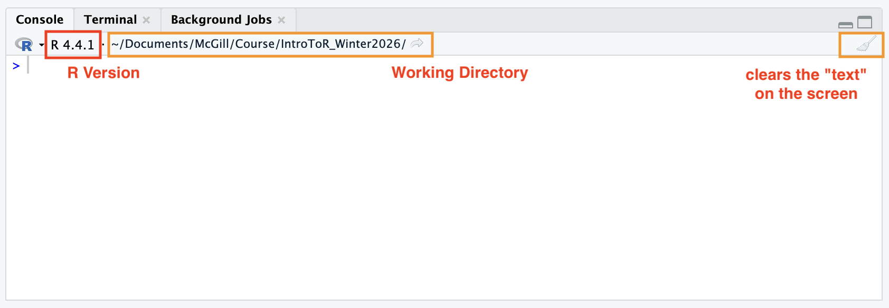
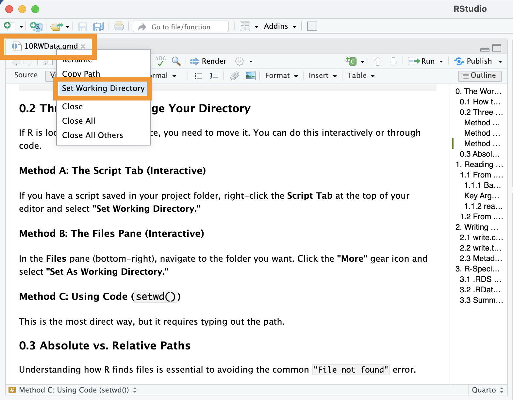
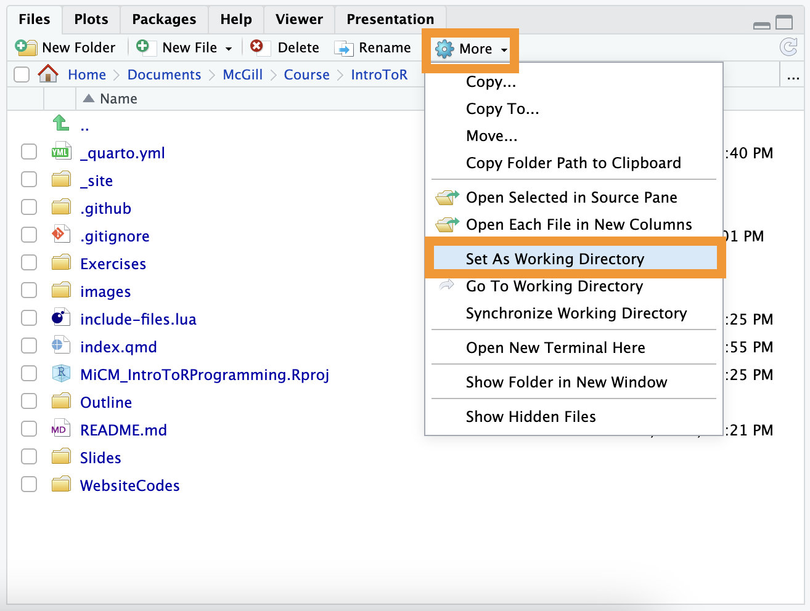
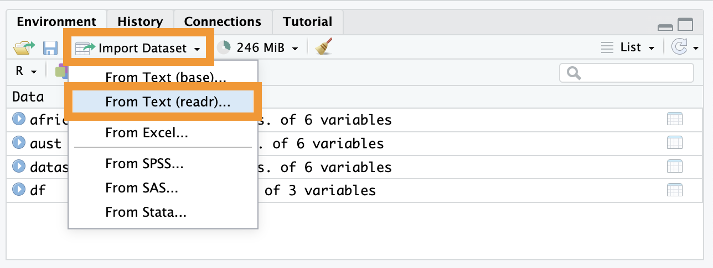
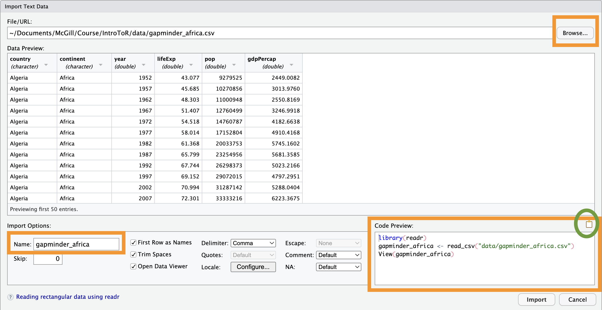

if (!require("gapminder", quietly = TRUE))
install.packages("gapminder")
library(gapminder)Reading/Writing Data
Materials adapted from Adrien Osakwe, Larisa M. Soto and Xiaoqi Xie.
0. The Working Directory
The Working Directory is the specific folder on your computer where R is currently “looking” for files. Think of it as R’s “home base.”
getwd(): Run this in the console to see your current “home base” address.setwd(): Use this to change where R is looking.
0.1 How to Find Your Current “Home Base”
There are two main ways to check where R is looking:
Using Code: Run
getwd()in the console. R will return the full “GPS address” (path) of your current location.Using Your Eyes: Look at the top of your Console panel. Right next to your R version info, you will see a file path (often starting with
~/).
Tip
Finding Your Working Directory from the console panel:
Right next to your R version, you will see a file path starting with ~/.
This is your Working Directory—the specific folder on your computer where R is currently “looking” for files.
There is a small gray arrow next to the path in the Console. Clicking this will immediately refresh your Files pane (bottom-right) to show you exactly what is inside your working directory.

0.2 Three Ways to Change Your Directory
If R is looking in the wrong place, you need to move it. You can do this interactively or through code.
Method A: The Script Tab (Interactive)
If you have a script saved in your project folder, right-click the Script Tab at the top of your editor and select “Set Working Directory.”

Method B: The Files Pane (Interactive)
In the Files pane (bottom-right), navigate to the folder you want. Click the “More” gear icon and select “Set As Working Directory.”

Method C: Using Code (setwd())
This is the most direct way, but it requires typing out the path.
0.3 Absolute vs. Relative Paths
Understanding how R finds files is essential to avoiding the common "File not found" error.
| Type | Description | Example |
| Absolute Path | The full “GPS address” from the root drive. | C:/Users/Name/Project/data/counts.csv |
| Relative Path | A shorthand address starting from your current folder. | data/counts.csv |
Tip
Best Practice: Keep your data and your R script in the same folder (or a sub-folder) and use Relative Paths. This makes your project “portable”—it will work for anyone you share it with!
Warning
Warning: Using setwd() is generally discouraged in shared projects because the path on your computer won’t exist on your colleague’s computer.
Why?
Because a path like C:/Users/Martina/... does not exist on your colleague’s computer. If you share your script, their R will crash immediately.
Best Practice: Use R Projects (.Rproj). When you open an R Project, R automatically sets the working directory to that folder. This allows you to use Relative Paths, making your code “portable” so it works for anyone, anywhere.
1. Writing Data Tables
After cleaning or filtering your data, you need to save your results to your hard drive.
1.1 Preparing the Demo Data
We will use the gapminder dataset to practice. We will create two subsets: one for Australia and one for the continent of Africa.
dim(gapminder)
## [1] 1704 6
summary(gapminder$lifeExp)
## Min. 1st Qu. Median Mean 3rd Qu. Max.
## 23.60 48.20 60.71 59.47 70.85 82.60
aust <- gapminder[gapminder$country == "Australia",]
africa <- gapminder[gapminder$continent == "Africa",]1.2 Saving as CSV with write.csv()
The Comma-Separated Value (.csv) is the universal language of data tables.
# Create a 'data' folder in your current working directory
dir.create("data")
# Save the Africa subset of the gapminder data
write.csv(africa, file = "data/gapminder_africa.csv", row.names = FALSE)
Caution
The “Folder Not Found” Error
R is a great calculator, but it isn’t a folder manager. If you tell R to save a file in a folder named data/ but that folder doesn’t exist yet, R will throw an error: No such file or directory.
Before saving, you must create the folder manually or use this code:
# Create a 'data' folder in your current working directory
dir.create("data")1.3 Saving as TSV with write.table()
In bioinformatics, Tab-Separated Value (.tsv) files are often preferred because gene names or clinical notes sometimes contain commas, which can “break” a CSV file.
# Saving as a TSV (using sep = "\t")
write.table(aust, file = "data/gapminder_australia.tsv", sep = "\t", quote = FALSE, row.names = FALSE)
Note
sep = "\t": Tells R to use a “Tab” to separate your values. Common ones are","(comma),"\t"(tab), and""(white space).quote = FALSE: Prevents R from putting double quotes around every word, making the file much easier to read in a text editor.
1.4 Exporting to Excel with write_xlsx()
Sometimes you need to share results with a collaborator who strictly uses Excel. The writexl package makes this easy.
if (!require("writexl", quietly = TRUE))
install.packages("writexl")
library(writexl)
write_xlsx(aust, path = "data/gapminder_australia.xlsx")1.5 Metadata and Versioning
Scientific data is iterative. You will likely generate 10 versions of the same table before your paper is published.
The “Dated” Filename: Never name a file
results_FINAL.csv. Instead, use:results_v1_2026-02-07.csv. When exporting data, always include a date or version number in the filename. This prevents overwriting and tells you exactly when the data was generated.The
row.names = FALSERule: By default, R tries to save the row numbers (1, 2, 3…) into your file. This usually creates an annoying, unnamed “Column 1” in Excel. Setting this toFALSEkeeps your data clean.
2. Reading Data Tables
2.1 Reading Text Files (.csv and .tsv)
2.1.1 Base R
These functions come pre-installed with R. They are reliable and don’t require any extra libraries, but can be slow with very large genomic datasets.
read.csv()Specifically designed for CSV files. It automatically assumes that your data is separated by commas (,).
read.table()(The “Parent” Function) This is the most flexible tool in your kit. Whileread.csv()is “locked” to commas,read.table()lets you specify any separator. This is essential for tab-separated genomic files.
dataset <- read.csv("data/gapminder_africa.csv")# Reading a Tab-Separated file (.tsv or .txt)
dataset <- read.table("data/gapminder_australia.tsv",
header = TRUE, # Does the first row have column names?
sep = "\t", # What separates the data? (\t = tab)
stringsAsFactors = FALSE) # Keep text as text, not categories
NoteKey Arguments for
read.table:
header = TRUE: Tells R that the first line contains the names of the columns.sep: The character that separates your values. Common ones are","(comma),"\t"(tab), and""(white space).dec: The character used for decimal points (useful if you are working with European data that uses a comma as a decimal).
2.1.2 readr (Tidyverse)
Part of the Tidyverse, read_csv() is faster and better at “guessing” your data types correctly.
if (!require("readr", quietly = TRUE))
install.packages("readr")
library(readr)
dataset <- read_csv("data/gapminder_africa.csv")2.2 Reading from Excel (.xlsx)
R cannot read Excel files natively. You need the readxl package.
if (!require("readxl", quietly = TRUE))
install.packages("readxl")
library(readxl)
dataset <- read_excel("data/gapminder_australia.xlsx", sheet = 1)2.3 The “Point-and-Click” Method (Interactive)
If you are a beginner or can’t remember the exact path to your file, use the Import Dataset button in the Environment panel (top-right).
Click Import Dataset.
Browse your computer and select your file.
Look at the “Code Preview” box in the bottom-right of the window. RStudio writes the code for you! You should copy and paste that code into your script so that your work is reproducible next time.
Note
Performance Limit:
Avoid using the interactive importer for massive datasets (like 100MB+ genomic files). The “preview” window will try to load the data to show it to you, which can cause RStudio to freeze.


3. R-Specific Formats (.RDS and .RData)
Sometimes you want to save an object exactly as it is in R (e.g., a complex statistical model or a large list).
3.1 .RDS (Save one object)
Best for saving a single dataframe or list. You can give it a new name when you load it back in.
saveRDS(africa, file = "data/africa.RDS")
africa_reloaded <- readRDS("data/africa.RDS")3.2 .RData (Save multiple objects)
Used to save your entire/some part of “Environment.” When you load it, the variables appear with their original names.
save(africa, aust, file = "data/continents.RData")
load("data/continents.RData", verbose = TRUE)3.3 Summary: RDS vs. RData vs. RProject
| Format | Purpose | Best Use Case |
| .RDS | Saves one object. | Saving a clean dataset to use in another script. |
| .RData | Saves multiple objects. | Saving your whole workspace before lunch. |
| .Rproj | Saves settings/context. | Keeping your file paths and open tabs organized. |